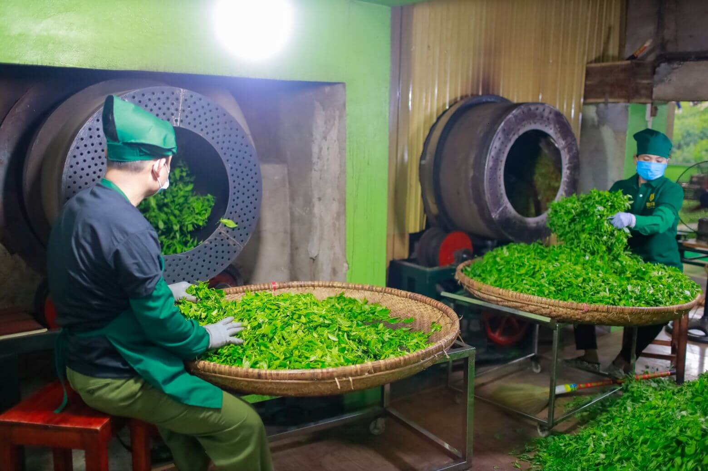
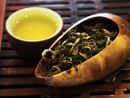
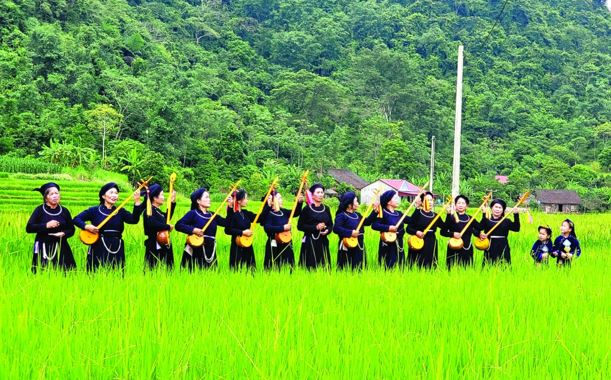
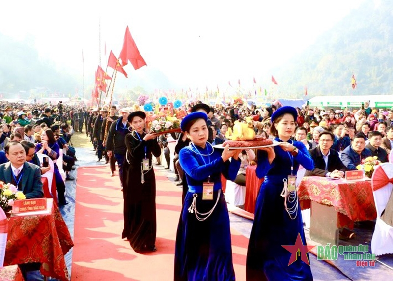
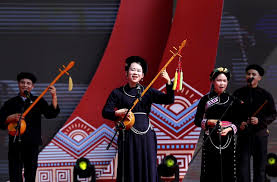

1. Trà Tân Cương – "Đệ Nhất Danh Trà"
Nhắc đến Thái Nguyên, người ta nghĩ ngay đến những đồi chè xanh mướt trải dài vô tận. Trà Tân Cương không chỉ là một sản phẩm nông nghiệp, đó là sự kết tinh giữa thiên nhiên và bàn tay tài hoa của con người. Những nương chè được tưới mát bởi nguồn nước từ Hồ Núi Cốc và che chở bởi dãy núi Tam Đảo, tạo nên hương vị không đâu trộn lẫn được.
Hái chè
Những người phụ nữ bản địa với đôi tay thoăn thoắt chọn lọc những búp chè "một tôm hai lá" vào lúc sáng sớm khi sương còn chưa tan hết.
Xao chè
Đây là giai đoạn quan trọng nhất. Nghệ nhân phải dùng bàn tay trần để cảm nhận nhiệt độ của chảo đồng, điều chỉnh lửa sao cho búp chè xoăn tít lại như móc câu, giữ trọn vẹn màu xanh và hương thơm.

Văn hóa thưởng trà – Nét đẹp tĩnh tại
Người Thái Nguyên thưởng trà không vội vàng. Một ấm trà ngon phải đạt đủ tứ tuyệt: "Sắc - Hương - Vị - Thần".
- Sắc Nước trà có màu vàng óng như mật ong rừng hoặc xanh nhạt như lá non.
- Hương Mùi thơm thoang thoảng như mùi cốm mới, nồng nàn mà thanh khiết.
- Vị Ban đầu có chút chát nhẹ nơi đầu lưỡi, nhưng ngay sau đó là vị ngọt hậu đậm đà len lỏi khắp khoang miệng.

2. Ẩm Thực Thái Nguyên: Sự Giao Thoa Của Đất Và Trời
Tinh hoa văn hóa Thái Nguyên còn nằm ở mâm cơm của người dân địa phương. Những món ăn tại đây không cầu kỳ về hình thức nhưng lại cực kỳ chú trọng vào nguyên liệu tự nhiên và quy trình chế biến tỉ mỉ.
Bánh chưng Bờ Đậu – Thức quà từ ngọc thực
Nằm ở huyện Phú Lương, làng bánh chưng Bờ Đậu là nơi lưu giữ bí quyết gói bánh không cần khuôn nhưng vẫn vuông vức mười cái như một.
Bí quyết: Phải là gạo nếp vải Định Hóa hạt to, tròn, thơm nức hòa quyện cùng thịt lợn đen thái miếng lớn và đỗ xanh vỏ mỏng. Đặc biệt, bánh được luộc bằng nước giếng trong vắt của vùng Bờ Đậu.
Nem chua Đại Từ – Vị chua thanh nồng nàn
Khác với các vùng miền khác, nem chua Đại Từ mang một đặc điểm riêng biệt. Nem không ăn ngay mà thường được nướng trên than hồng hoặc rán sơ.
"Khi lớp lá chuối bên ngoài cháy sém, mùi thơm của lá ổi và thịt lợn lên men tỏa ra vô cùng kích thích."
Mì gạo Hùng Sơn
Từ lâu đã nổi tiếng bởi độ dai, trắng và vị ngọt của gạo nguyên chất, không hóa chất tẩy trắng.
Cơm lam Định Hóa
Thức quà của rừng già, nơi hạt gạo nếp được nướng trong ống tre nứa, thơm mùi khói bếp.
3. Bản Sắc Văn Hóa Các Dân Tộc: Đa Dạng Trong Thống Nhất
Thái Nguyên là nơi chung sống của nhiều dân tộc như Kinh, Tày, Nùng, Sán Dìu, Dao... Mỗi dân tộc đóng góp một viên gạch để xây dựng nên tòa lâu đài văn hóa rực rỡ.
Hát Then, đàn Tính
Hát Then là loại hình nghệ thuật diễn xướng dân gian đặc sắc của người Tày, Nùng. Tiếng đàn Tính ngân vang giữa núi rừng như lời thủ thỉ của thiên nhiên.

Lễ hội Lồng Tồng
Vào những ngày đầu xuân, du khách sẽ được hòa mình vào không khí náo nhiệt với các trò chơi dân gian như ném còn, đẩy gậy.


4. Bảo Tồn Và Phát Huy Tinh Hoa Trong Kỷ Nguyên Số
Số hóa di sản
Các bảo tàng trực tuyến giúp người trẻ dễ dàng tiếp cận với lịch sử hào hùng của dân tộc.
Trà và Du lịch
Các tour trải nghiệm giúp du khách hiểu về giá trị lao động và sự tận tâm của người làm trà.